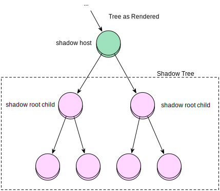

The Magic of Web Components
- with chocolate sprinkles on top -
Web Components
In a nutshell, Web Components allow us to encapsulate and share reusable widgets. The main idea is to been able to bundle markup and styles to create custom components, all the code will be hidden from the outside world, the markup and the styles will be isolated.Web Components
-
 Custom Elements
Custom Elements
-
 Templates
Templates
- Shadow Dom
-
 HTML Imports
HTML Imports
Custom Element Lifecycle
- Create
- Register
- Instantiate
- Insert
- Remove
- Attribute changes
- Extend other elements (is??)
Templates
Enable you to store HTML data inside an HTML document. The content of a <template> element is parsed without interpreting it (no loading of images etc.).Why do we want templates?
- Separation of concerns
- Cloneable so reusable
Important to remember!
- Parsed as HTML
- Not rendered
- Can be cloned
- Instantiated at runtime when the user wants it
How does a template look?
<template id="example">
<style>
</style>
<div class="outer">
<span>An Example</span>
</div>
<script></script>
</template>
Enable a template
var shadow = this.createShadowRoot(); //Create shadowdom
var template = importDoc.querySelector('#example'); //Import the template
var node = template.content.cloneNode(true); //Clone the template
shadow.appendChild(node); //Append node to the shadowtree
CloneNode() vs. ImportNode()
CloneNode() the node document is updated when the nodes are appended with appendChild()
Document.importNode() the node document is updated when the nodes are cloned.
CSS in templates
<template id="example">
<style>
span { color: red; }
</style>
<div class="outer">
<span>An Example</span>
</div>
<script></script>
</template>
CSS in templates
Sadly <link> doesn't work...
CSS in templates
<style> @import "includes/template.css"; </style> does work!
Shadow Dom
Encapsulates and hides the innards of a custom element inside a nested document.Shadow Dom
- Style Encapsulation
- Event Re-Targeting
- Separation of Concerns
Shadow Dom
- Document tree
- Shadow tree
- Shadow host
- Shadow root
- Shadow boundary
Overview

Overview
Activate the shadow dom
root = element.createShadowRoot({ mode: ... });
'closed' vs. 'open'
root = element.createShadowRoot({ mode: 'open' });
root = element.createShadowRoot({ mode: 'closed' });
Slot
<slot name="example"></slot>
<div slot="example">Example text</div>
Slot
- What
- Why
- Syntax
- Access content from the import
- ????
DEMO TIME
<==[]
Browser Support
According to webcomponents.org:
Browser Support
However sadly this is not the entire truth
- Polymer, etc etc
- webcomponents.js polyfill